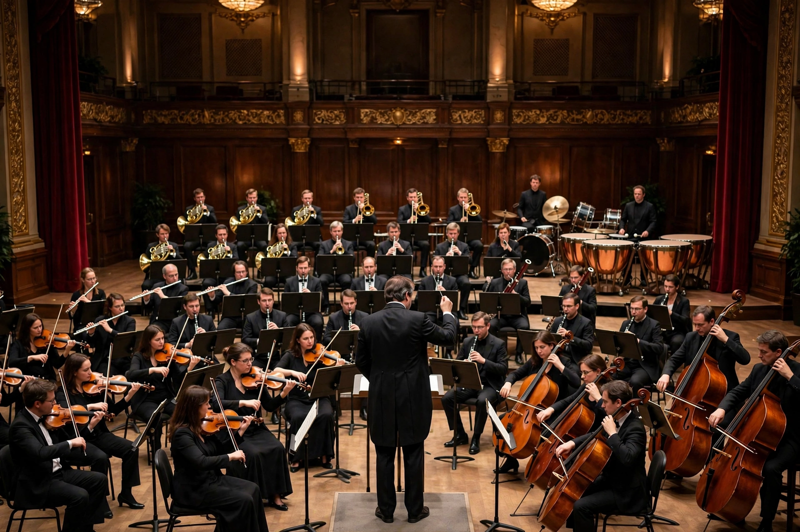

Classical music

A symphony orchestra on a concert-hall stage: strings in front, brass and percussion behind, conductor centre stageClassical music generally refers to the formal musical tradition of the Western world, considered distinct from Western folk and popular music. Its roots lie in the sacred and secular traditions of the Church and courts of medieval Europe, developing written notation that allowed complex works to be composed, preserved and performed across centuries.
Standard periodisation divides it into Medieval, Renaissance, Baroque (1600–1750), Classical (c. 1750–1820), Romantic (19th century) and 20th/21st-century eras. Composers include Johann Sebastian Bach, Wolfgang Amadeus Mozart, Ludwig van Beethoven, Johannes Brahms, Pyotr Ilyich Tchaikovsky and Igor Stravinsky. Its institutions are the Orchestra, the Opera house and the Symphony concert.